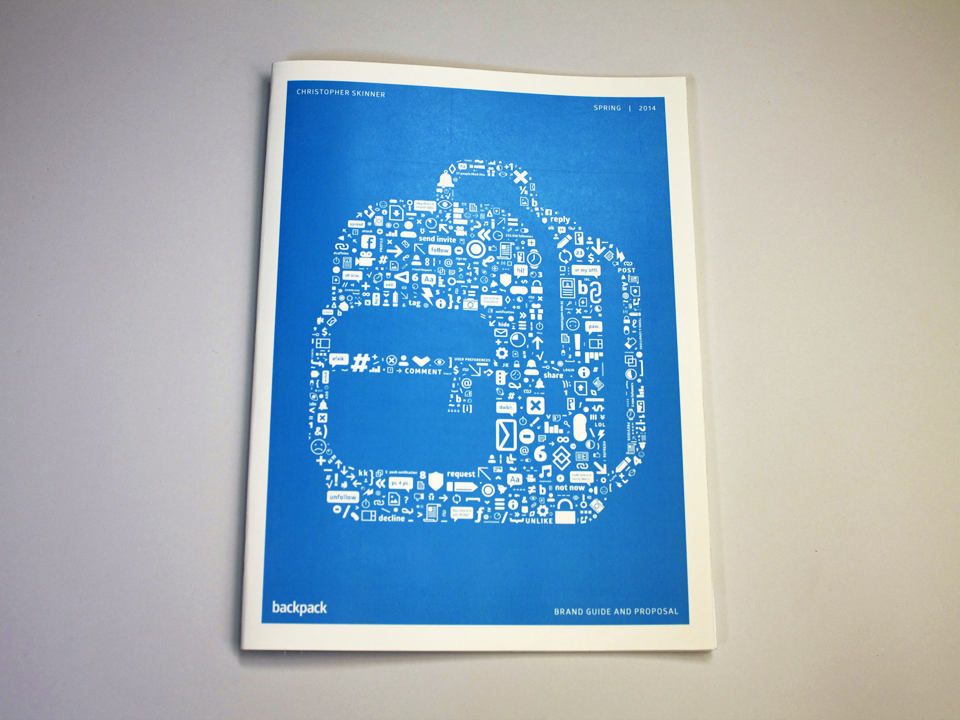

Backpack is a mobile tablet application for families to better understand how to use social media. With Backpack parents and their children play equal roles in maintaining their online behavior. Children moderate themselves and their own interests while parents stay informed. Whatever your parenting style, Backpack
fits in any household and brings the family back together online.

Parents can check in on their kids mobile activity. See their interests, time spent on their devices, and their most used applications.
Children can keep track of their own activity and receive
suggestions for relevant applications.
Alerts and translations for posts which may hurt your children's profile.
